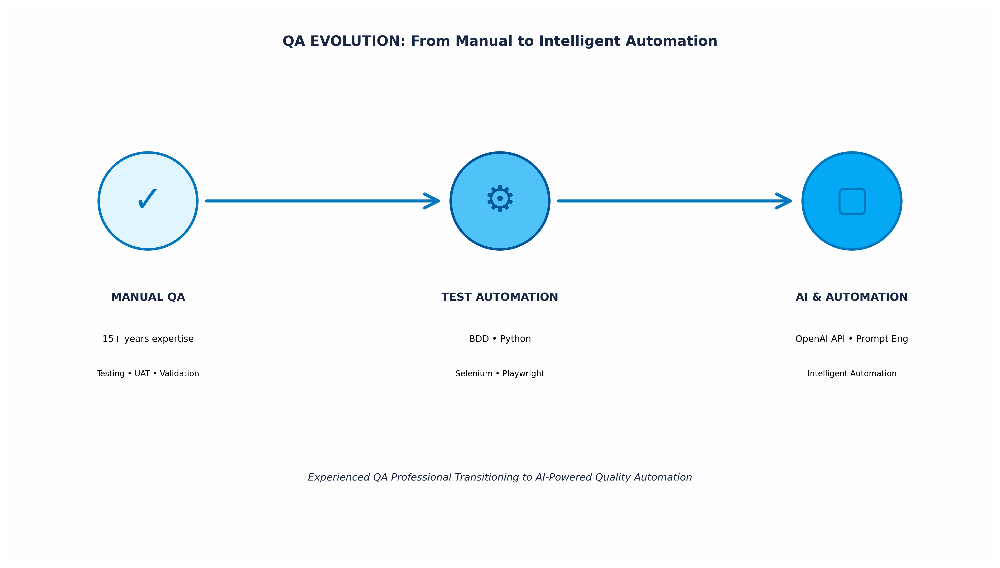

Welcome

I'm a senior QA professional with 15+ years across SaaS, insurance, airline, healthcare, and hospitality platforms — and one of the early adopters of GenAI in QA practice.
I build AI-augmented testing pipelines that cut manual test case creation time by 80%, own quality strategy end-to-end on enterprise releases, and lead distributed QA teams across the Philippines and India. I've served as sole QA on multiple engagements, built complete regression suites from scratch in under three months, and sat on hiring panels for senior QA roles.
Currently available for Senior QA, QA Lead, QA Manager, and AI-QA hybrid roles. Open to remote opportunities across APAC, AU/NZ, and globally.
👉 Start with my featured project below — an autonomous AI-driven QA pipeline that converts Jira requirements into fully executed test suites.
🤖 AI-Augmented Testing
ISTQB CT-GenAI certified. Production experience using Claude AI and OpenAI API for autonomous test generation, prompt-engineered regression coverage, and AI-driven QA pipelines.
🎯 QA Strategy & Governance
Risk-based test strategy, defect analytics, root cause analysis, and release governance across 15+ years of enterprise releases in insurance, airline, healthcare, and SaaS.
👥 QA Leadership
Led distributed QA teams across the Philippines and India. Sole QA on multiple engagements, mentor to junior testers, and panel evaluator on senior QA hires.